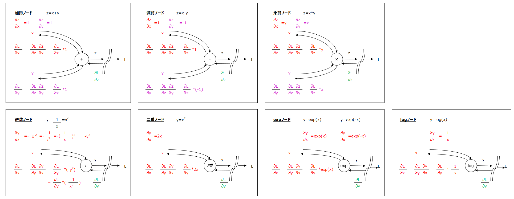
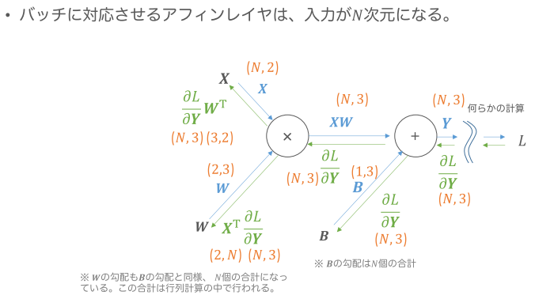
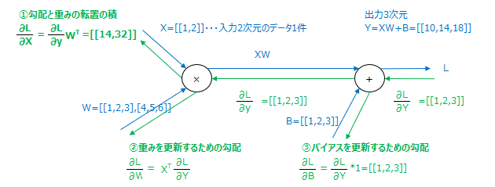
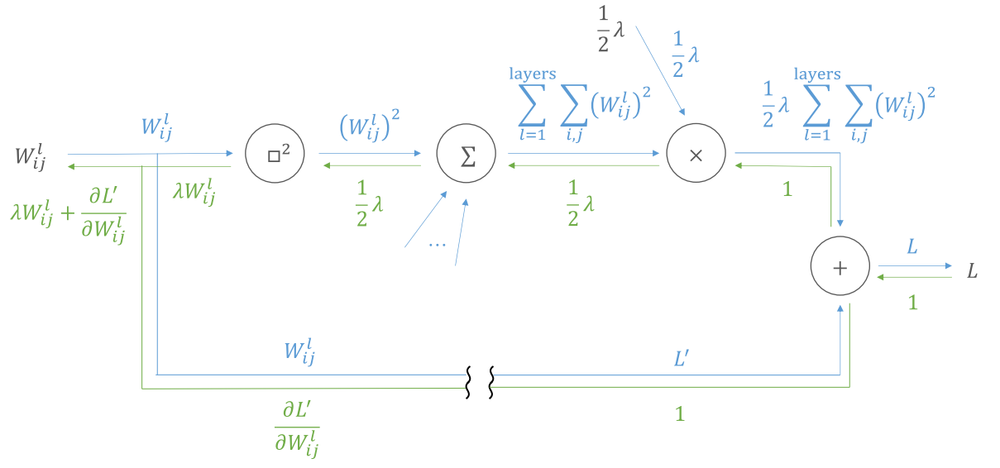
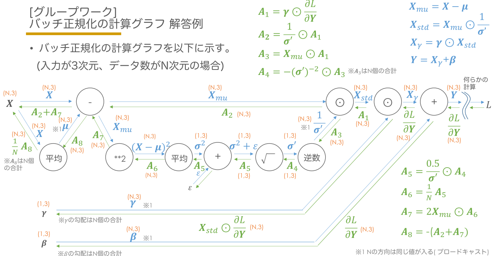

計算グラフ
計算グラフの説明の前に、ニューラルネットワークの学習にはその過程において、
算出された出力（とある画像になにが描かれているか、などの判定などの出力結果）を
「勾配降下法」を用いて最適化していきます。
その際、勾配を求めるために微分を行うわけですが、書籍の前半では「数値微分」を
用いて実装を行っていました。
しかし計算処理の効率から、時間がかかるという難点があります。
そこでこの「誤差逆伝搬法」を用いることで、効率的かつ高速に計算を行おう（学習を行おう）というのが目的です。
誤差逆伝搬法による入力と出力の関係を表しています。
（逆と名前がつく通り、入力と出力の方向が逆になっています）
|

|
| アフィンレイア（バッチ対応版） |
|

|
|

|
| 荷重減衰対応時の計算グラフ |
|

|
| バッチ正規化の計算グラフ |
|

|
 戻る
戻る 一覧へ
一覧へ